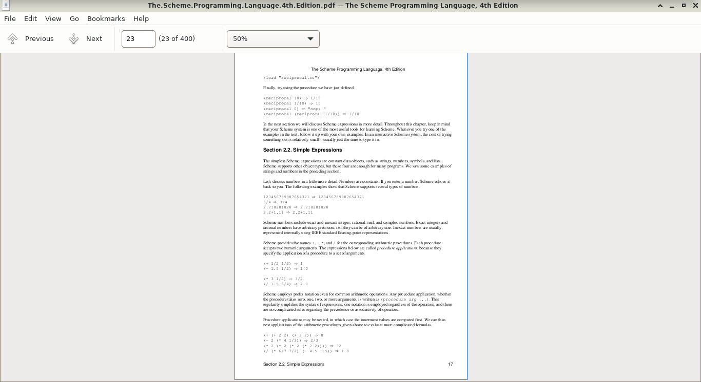

Introduction
Lecture 1
Course Introduction
Welcome!
Welcome to all the new students! Here I am going to be talking about Machine Learning and all of the great things that this “technology” has to offer. To begin our course, I shall start with a bit of house keeping – more specifically, I will be talking about what exactly we’ll be learning about in the course (Machine Learning is a broad subject after-all). In addition, I will tell you where you can find the resources related to the course and how you can contact me, should you have any questions.
What this course is about?
In this course, we will be learning about Machine Learning: firstly, what Machine Learning actually is; secondly, we’ll take a look at some of the algorithms within the scope of Machine Learning, and develop an intuition about how these algorithms work and when they would be useful; and finally, how we can compare and evaluate the algorithms we’ve learnt about.
How this course will be taught
I intended to deliver this course via a series of lectures. These lectures will be accompanied by the PDF lecture slides, in which I will provide the definitions and provide reference links should you wish to do some extra reading.
Outline of the course
| Lecture | Type | Topic |
|---|---|---|
| 1 | Theory | Introduction |
| 2 | Theory | Linear models |
| 3 | Lab | Lab on Linear models |
| 4 | Theory/Lab | Evaluation of models |
| 5 | Theory/Lab | Support Vector Machines |
| 6 | Theory/Lab | Kernel methods |
Reading the lectures
Source code
During the course, I would also like to supplement my algorithmic definitions and explanations with some programming code – for this I will use the Python programming language. The code snippets would look something like:
Running the source code yourself
All of the source can be run by yourselves if you use the same python environment (i.e. that you have installed all the appropriate libraries). On the git repository, I’ve included the environment.yml file used in the production of these lectures.
To run the code:
References
In some cases, and is the norm with academic traditions, we’ll want to include a reference, a link to previous written works.
Here is an example of a sentence that includes a reference:
“This is a very important sentence which I assert to be true, to convince you of this fact I shall appeal to authority and include a reference: (Shalev-Shwartz, Shai and Ben-David, Shai, 2014)”
More information on the referenced material (such as title, publishing date) will be found in the bibliography slide (or bottom of the webpage if you’re viewing the HTML version of the lectures).
About Me
My name is Dr Jay Paul Morgan. I am a researcher at the Université de Toulon, where I am developing Deep Learning models (a sub-field of Machine Learning research) for the study of astrophysical phenomenon.
You can find more information and links on my personal (LIS-Lab) website: https://pageperso.lis-lab.fr/jay.morgan/
I also publish libraries and source code online:
- Github: https://github.com/jaypmorgan
- Gitlab: https://gitlab.com/jaymorgan
- Source Hut: https://sr.ht/~jaymorgan/
If you have any questions, you can email me at jay.morgan@univ-tln.fr
Where you can find the resources
I try to make this course as accessible as possible, which means that I host these slides in a variety of ways to suit you.
Firstly, you can find the links to all my courses on my personal website at: https://pageperso.lis-lab.fr/jay.morgan/teaching.html
Here you can find the links to each lecture in a PDF or HTML format. Additionally, you can view the source code used to make these lectures on source hut: https://git.sr.ht/~jaymorgan/teaching. On this git repository you can find all my lectures from all years.
What is learning, anyway?
Let’s answer the question of learning
We’ll begin our journey into the world of Machine Learning by tackling the question of what it means to ‘learn’ – how may a machine actually learn anything?
Bait-shyness
To begin to answer the question of learning, we may turn to nature for advice. Principally, if we look at the studies conducted with Mice we find some idea to notion of learning (Shalev-Shwartz, Shai and Ben-David, Shai, 2014). (Image by brgfx on Freepik)
When a rat encounters a novel source of food, it will first eat a little bit of it. If the food is edible for the rat, it will continue to eat the food, even in future encounters. If, however, on the initial contact with the food, the rat deems the food poisonous, it will ignore and not eat the food in future encounters. This process we call ‘bait-shyness’.
Here then we see the rat, on finding something new, learn from its experience, and use that knowledge of the experience for future encounters.
Our initial understanding of rat’s bait-shyness was limited, but we’ve come to understand more about it. For instance, we learn that their learning process is more complex than originally thought. In a later experiment, where the ‘poison’ in the food is replaced by a different unpleasant stimulus such as a electric shock – i.e. when a rat eats a food, it is then shocked. It was found that this did not deter the rat from eating the food in future encounters, unlike the poison.
It is presumed that the rat’s have some ‘prior knowledge’ about the world and do not infer a temporal relationship between the food and being shocked, while they can infer the same relationship with food and illness.
Computer Programs
From these two examples of how rats may learn we see: the rat will make a guess about something now (i.e. that the food is not poisonous), it will find out how good this guess is (i.e. it either gets ill or it does not), and learn from how well its guess was for the future. We also see that its learning can be impacted by the rat’s prior knowledge about how the world may work.
But how does this framework for the process of learning translate to computers? For a more formal definition of how computer programs could be said to learn, we have a similar idea:
A computer program is said to learn from experience \(E\) with respect to some class of tasks \(T\) and performance measure \(P\), if its performance a tasks in \(T\), as measured by \(P\), improves with experience \(E\).
(Mitchell, Tom M, 1997)
Quiz!
What function is being used here?
8 ? 5 = 13
9 ? 1 = 10
1 ? 2 = 3Something more difficult…
What values are being used here?
x * 1 + y = 4
x * 3 + y = 8
x * 5 + y = 12When might we need Machine Learning

Why do we need computer programs that ‘learn’ anyway? We already have programming languages, why can’t we just use them?
Let’s suppose we’re creating a very simple Optical Character Recognition (OCR) program.
This program looks at a PDF document and converts the text into something we can copy and paste. Part of this program’s task is to take an individual character, say the number ‘8’, and recognise that it’s an 8 and add that to the already scanned text.
How would we go about creating a program where we can define how to identify ‘8’ or ‘1’ or ‘l’ – with all the varieties of lighting conditions, handwriting, fonts, sizes. We could find the process of encompassing all different variations tiresome – if not impossible, and that’s only for a single character!
With Machine Learning, instead of enumerating all possible solutions within a programming language, we collect a bunch of examples of ’8’s and give them to the algorithm to learn from.
Through looking at these many different examples, the algorithm will/should be able to recognise what an 8 generally looks like.
Different types of Learning
What we have just demonstrated by way of the OCR example, is the type of learning we call ‘Supervised Learning’. We have many examples of input (lots of different kinds of handwritten 8’s), and we tell the learning algorithm, that they are indeed the number 8.
But there are other kind of different learning frameworks. Specifically we have the following:
- Supervised Learning
- Unsupervised, or sometimes called self-supervised Learning
- Reinforcement Learning
Supervised Learning
To better formalise Supervised Learning from our previous OCR example, Supervised Learning is when the learning algorithm “see’s” or has access to both the input and output.
Let’s have a dataset \(X\), which is a set consisting of tuple pairs \(x_i, y_i\). \(x_i\) is an input, i.e. a single image with an ‘8’, and \(y_i\) is a label which tells the learning algorithm if the input is indeed an ‘8’ or something else. Mathematically we have:
\(X = \{(x_1, y_1), (x_2, y_2), ..., (x_n, y_n)\}\)
Unsupervised Learning
In Unsupervised learning, we have again have a dataset \(X\), who’s elements are only inputs. In other words, there are no corresponding labels for each input. Instead, the learning algorithm must learn inherent patterns in the data and create labels itself. Throughout the course, we’ll see examples of Unsupervised Learning in action.
One thing to note: Recent methodologies have started to call Unsupervised Learning, self-supervised. As we have just discussed, the labels are inherent to the data from the discovered patterns, it’s just we are not explicitly giving them to the learning algorithm ourselves. So it’s sort of like a supervised learning setup, except the learning algorithm is providing the labels itself – hence the self-supervised.
Reinforcement Learning
Reinforcement Learning is very different to both Supervised and Unsupervised Learning. Here is the type of learning you might be familiar with if you’ve seen ‘AI’ that learns to play video games. In this type of learning, we have the following elements:
- An agent
- An environment
- A set of allowed actions the agent can make within its environment.
In this situation, an agent will interact with it’s environment, and when it does something it can receive a reward (a reward can be positive or negative). The agent will remember what it has done to receive the reward. The objective for the agent is to maximise the reward score, and learns to do this through many iterations or play-through.
Terminology
What will our data look like?
In this section we shall take a look at the different types of data we might expect and the different terminology used to name them.
Data in Machine Learning applications can come in a variety of different formats. The most typical data formats we might see are:
- Tables
- Images/Videos
- Text
- Sound
These are the initial formats, though, before actually doing any learning, we will want to transform them into a different representation that we can use.
Tables
A table, or tabular, format is a \(n \times m\) set of data with \(n\) samples or examples, and \(m\) features for each sample. For example, suppose we have a table consisting the price of 100 different houses:
| Number of bedrooms | Garden size (ft) | … | Price ($) |
|---|---|---|---|
| 3 | 0 | … | 150,000 |
| 5 | 10 | … | 200,000 |
| … | … | … | |
| 10 | 1000 | … | 2,000,000 |
In a supervised learning setting, where we want to predict the price of a house we may then have the following dataset:
\(X = \{([3, 0, ...], 150,000), ([5, 10, ...], 200,000), \\..., ([10, 1000, ...], 2,000,000)\}\)
Images/Videos
Images are composed of 2D or 3D arrays of numeric values. For example, in a RGB image that is 1024x500 pixels, we would have the array of size 1024x500x3 – where 3 is the red, green, and blue channel, respectively. If we have just a grayscale image, we could represent it as either 1024x500x1 or 1024x500 as the channel ‘dimension’ of the array is singular.
We may already know that videos are simply a sequence of images that are iterated through 24+ times a second. For a 24 frames per second video, we would have an array size of 1024x500x3x24 – a 4-dimensional array.
Text
Text and language data is perhaps one of the most flexible formats of data, in terms of the person implementing the Machine Learning algorithm is somewhat free in determining how to represent the language to the algorithm.
With text data, we have a series of ‘tokens’ – these tokens could be words, groups of words, parts of words, and even just characters. For example, consider:
“this is a sentence, that shouldn’t be misunderstood.”
Tokenisation of text
“this is a sentence, that shouldn’t be misunderstood.”
We could ‘tokenise’ (the process of converting a string into a series of tokens that represent the original string) this sentence by splitting at white-space:
{"this", "is", "a", "sentence,", "that" "shouldn't", "be", "misunderstood."}
Notice how with the words “sentence” and “misunderstood”, the punctuation is considered part of the word and so “misunderstood.” != “misunderstood”.
These kinds of questions of how to best represent text and language we will talk more about in later lectures!
Time-series
I named this section time-series to be as general as possible. Within the type ‘time-series’, we could have the following types of information:
- Sound waves
- Stock prices
- Network messaging
These types of data all share a property in that the ‘time’ component is important in their meaning.
Example Problems
Throughout this course, we’ll be using toy datasets for the explanation of Machine Learning and its algorithms. In this section, we’ll take a broad look over all the datasets that we’ll come to be very familiar with.
Types of Outputs – Regression & Classification
First, however, I wish to explain the difference between the terms Regression and Classification.
- Regression: the prediction of a continuous quantity, i.e. how much does this house cost?
- Classification: the prediction of a discrete value or class label, i.e. dog or cat?
In the following toy datasets, we’ll see different types of predictions that fall under the regression/classification output type.
Boston House Prices Dataset – Tabular Regression
A dataset of 506 houses in Boston, USA, collected during US Census.
- 13 features/properties about each house
- 1 target property: the price of the house
More information about each of the features can be found at: https://www.cs.toronto.edu/~delve/data/boston/bostonDetail.html
(Harrison Jr, David and Rubinfeld, Daniel L, 1978)
Boston House Prices – example rows
import warnings
from sklearn.datasets import load_boston
with warnings.catch_warnings():
warnings.filterwarnings("ignore")
boston = load_boston()
boston = pd.DataFrame(
data=np.c_[boston['data'], boston['target']],
columns=boston['feature_names'].tolist() + ['target'])
print(boston[:2]) CRIM ZN INDUS CHAS NOX RM ... RAD TAX PTRATIO B LSTAT target
0 0.00632 18.0 2.31 0.0 0.538 6.575 ... 1.0 296.0 15.3 396.9 4.98 24.0
1 0.02731 0.0 7.07 0.0 0.469 6.421 ... 2.0 242.0 17.8 396.9 9.14 21.6
[2 rows x 14 columns]Boston House Prices – concerns
The Boston dataset is an excellent dataset in the fact that it contains some ethical issues when it comes to Machine Learning. More specifically, some of the features in the data are ‘dummy’ variables for racial attributes (Carlisle, M., 2020). Moreover, these features show a racial segregation has a positive impact on house prices.
Scikit-Learn (scikit-learn, 2022), one of the most prolific Machine Learning framework in the Python ecosystem, has decided to depreciate and remove the Boston dataset from their repository following these concerns.
We will continue to use the dataset here as it is an easy to understand regression problem, and to demonstrate how easy it is to be accidentally unethical if you’re not thinking about the data carefully enough.
Iris Dataset – Tabular Classification
")
Iris Dataset – features
150 examples
4 features: Petal length/width, sepal length/width
1 classification: type of flower: {viriginica, setosa, veriscolor}
https://archive.ics.uci.edu/ml/datasets/iris (Fisher, Ronald A, 1936)
")
Iris Dataset – example rows
from sklearn.datasets import load_iris
iris = load_iris()
iris = pd.DataFrame(
data = np.c_[iris['data'], iris['target']],
columns = iris['feature_names'] + ['target'])
print(iris.head(2)) sepal length (cm) sepal width (cm) petal length (cm) petal width (cm) target
0 5.1 3.5 1.4 0.2 0.0
1 4.9 3.0 1.4 0.2 0.0MNIST Dataset – Image Classification

A dataset of images (of size 28x28) containing handwritten digits from 0 - 9.
http://yann.lecun.com/exdb/mnist/
(LeCun, Yann and Bottou, L{\’e}on and Bengio, Yoshua and Haffner, Patrick, 1998)
MNIST Dataset – Features
- 60,000 images in the training dataset
- 10,000 images in the test dataset
- 28x28 pixels (grayscale)
MNIST Dataset – Example Rows
pixel1 pixel2 pixel3 pixel4 pixel5 pixel6 pixel7 pixel8 pixel9 \
0 0.0 0.0 0.0 0.0 0.0 0.0 0.0 0.0 0.0
1 0.0 0.0 0.0 0.0 0.0 0.0 0.0 0.0 0.0
pixel10 ... pixel775 pixel776 pixel777 pixel778 pixel779 pixel780 \
0 0.0 ... 0.0 0.0 0.0 0.0 0.0 0.0
1 0.0 ... 0.0 0.0 0.0 0.0 0.0 0.0
pixel781 pixel782 pixel783 pixel784
0 0.0 0.0 0.0 0.0
1 0.0 0.0 0.0 0.0
[2 rows x 784 columns]Large Movie Review Dataset – Text Classification/Regression
Story of a man who has unnatural feelings for a pig. Starts out with a opening scene that is a terrific example of absurd comedy. A formal orchestra audience is turned into an insane, violent mob by the crazy chantings of it’s singers. Unfortunately it stays absurd the WHOLE time with no general narrative eventually making it just too off putting. Even those from the era should be turned off. The cryptic dialogue would make Shakespeare seem easy to a third grader. On a technical level it’s better than you might think with some good cinematography by future great Vilmos Zsigmond. Future stars Sally Kirkland and Frederic Forrest can be seen briefly.
Review from: train/neg/0_3.txt
- 50,000 movie reviews (25,000 for training and testing).
- Each review is labelled with a binary label of sentiment – a positive or negative review was towards the movie in question.
https://ai.stanford.edu/~amaas/data/sentiment/
(Maas, Andrew L. and Daly, Raymond E. and Pham, Peter T. and Huang, Dan and Ng, Andrew Y. and Potts, Christopher, 2011)
Ham or Spam – Text Classification
Message-ID: <8701134.1075856113926.JavaMail.evans@thyme>
Date: Mon, 30 Oct 2000 02:06:00 -0800 (PST)
From: shona.wilson@enron.com
To: eugenio.perez@enron.com
Subject: meeting deadlines
Mime-Version: 1.0
Content-Type: text/plain; charset=us-ascii
Content-Transfer-Encoding: 7bit
X-From: Shona Wilson
X-To: Eugenio Perez
X-cc:
X-bcc:
X-Origin: Beck-S
X-FileName: sbeck.nsf
Dear Eugenio,
I did not want to say this when everyone else was around, but I am concerned
that no attempt was made to meet the deadline of this morning that we
discussed last Friday. (to decide on a name for the database). Only Maria
Teresa had her information to me this am as requested. The deadline could
have been easily met by working diligently this morning, but Jennifer did not
come in until 8:30 and MT until 8:15.
I thought we had discussed the urgency of this - to have something to present
at the 10am meeting. We need to discuss this to ensure it does not happen
again.
Best regards
Shona- Enron Spam classification of email messages.
- Is the email Spam – each email is labelled with a binary label, spam or not spam (ham).
- The dataset contains 17,171 spam and 16,545 ham email messages.
https://www2.aueb.gr/users/ion/data/enron-spam/
(Metsis, Vangelis and Androutsopoulos, Ion and Paliouras, Georgios, 2006)
Concerns & Considerations
As we saw with the Boston house prices dataset, ethical concerns can easily arise when we use statistical analysis & Machine Learning. But our use of Machine Learning carries many more concerns other than just racial biases. In this section, we’ll highlight some ethical considerations to be made when designing and building Machine Learning models.
Compute resources – environmental concerns
Large-scale deployment of AI could also have both positive and negative impacts on the environment. Negative impacts include increased use of natural resources, such as rare earth metals, pollution and waste, as well as energy consumption. However, AI could help with waste management and conservation offering environmental benefits.
[…] In the United States, data centres already account for about 2 percent of all electricity used. In one estimation, DeepMind’s AlphaGo – which beat Go Champion Lee Sedol in 2016 – took 50,000 times as much power as the human brain to do so.
({European Parliament. Directorate General for Parliamentary Research Services.}, 2020)
Bias in language models
")
Biases exist in language models trained on news articles (Bolukbasi, Tolga and Chang, Kai-Wei and Zou, James Y and Saligrama, Venkatesh and Kalai, Adam T, 2016).
Personal information
In Machine Learning applications where data is generated (such as generating faces that don’t exist), there is a possibility to expose personal information. For example, in a situation where these generative Machine Learning models create synthetic patient data, the model may be trained on real medical data. The output of the Machine Learning model could possibly leak personal information.
(Arora, Anmol and Arora, Ananya, 2022)
Mental health of optimisation algorithms
This example is more specific to how algorithms are used as opposed to their specific design. Yet, this should still be highlighted. We have seen increasing discussion surrounding the use of optimisation algorithms that try to increase the amount of ‘screen time’ or engagement from users of social media, and it’s no secret that spending lots of time of social media has a measurable effect on one’s mental health.
Copyright Concerns
A more recent addition to the concerns is that of Github’s co-pilot application that helps users write programming code. This application has been developed on open-source software – some of which includes licensing that specifies how this open-source code may be used (for example, with attribution or copy-left). Yet, Github’s co-pilot may insert code that its been trained on verbatim (though recent additions have been addressing these concerns), resulting in a situation of ‘code laundering’. https://twitter.com/mitsuhiko/status/1410886329924194309
float Q_rsqrt( float number )
{
long i;
float x2, y;
const float threehalfs = 1.5F;
x2 = number * 0.5F;
y = number;
i = * ( long * ) &y; // evil floating point bit level hacking
i = 0x5f3759df - ( i >> 1 ); // what the fuck?
y = * ( float * ) &i;
y = y * ( threehalfs - ( x2 * y * y ) ); // 1st iteration
// y = y * ( threehalfs - ( x2 * y * y ) ); // 2nd iteration, this can be removed
return y;
}
// Implementation from Quake III Arena under the GPL license.Summary
What is Machine Learning
- We’ve taken a look at the different kinds of frameworks for learning – animal behaviour with bait-shyness, and how that translates in computer programs.
- We’ve identified the different types of learning: supervised, unsupervised, and reinforcement learning.
- We’ve looked at the different types of data we may encounter, from tabular to text data, and have also seen examples of some toy datasets we will be using in the course.
- Finally, we’ve highlighted some of the ethical concerns that can arise in Machine Learning.
Bibliography
Bibliography
Arora, Anmol and Arora, Ananya (2022). Generative Adversarial Networks and Synthetic Patient Data: Current Challenges and Future Perspectives, {Royal College of Physicians}.
Bolukbasi, Tolga and Chang, Kai-Wei and Zou, James Y and Saligrama, Venkatesh and Kalai, Adam T (2016). Man is to computer programmer as woman is to homemaker? debiasing word embeddings, Advances in neural information processing systems.
Carlisle, M. (2020). Racist Data Destruction?, Medium.
Diliff (2014). Iris germanica (Purple bearded Iris), Wakehurst Place, UK - Diliff.jpg.
Eric Guinther (2005). Image of a primrose willowherb Ludwigia octovalvis (family Onagraceae), flower showing petals and sepals.
Fisher, Ronald A (1936). The use of multiple measurements in taxonomic problems, Wiley Online Library.
Gonen, Hila and Goldberg, Yoav (2019). Lipstick on a {{Pig}}: {{Debiasing Methods Cover}} up {{Systematic Gender Biases}} in {{Word Embeddings But}} Do Not {{Remove Them}}, {arXiv}.
Harrison Jr, David and Rubinfeld, Daniel L (1978). Hedonic housing prices and the demand for clean air, Elsevier.
LeCun, Yann and Bottou, L{\’e}on and Bengio, Yoshua and Haffner, Patrick (1998). Gradient-based learning applied to document recognition, Ieee.
Maas, Andrew L. and Daly, Raymond E. and Pham, Peter T. and Huang, Dan and Ng, Andrew Y. and Potts, Christopher (2011). Learning Word Vectors for Sentiment Analysis, Association for Computational Linguistics.
Metsis, Vangelis and Androutsopoulos, Ion and Paliouras, Georgios (2006). Spam filtering with naive bayes-which naive bayes?.
Mitchell, Tom M (1997). Machine learning, McGraw-hill New York.
Shalev-Shwartz, Shai and Ben-David, Shai (2014). Understanding machine learning: From theory to algorithms, Cambridge university press.
scikit-learn (2022). Sklearn.Datasets.Load\_boston, scikit-learn.
{European Parliament. Directorate General for Parliamentary Research Services.} (2020). The Ethics of Artificial Intelligence: Issues and Initiatives., {Publications Office}.